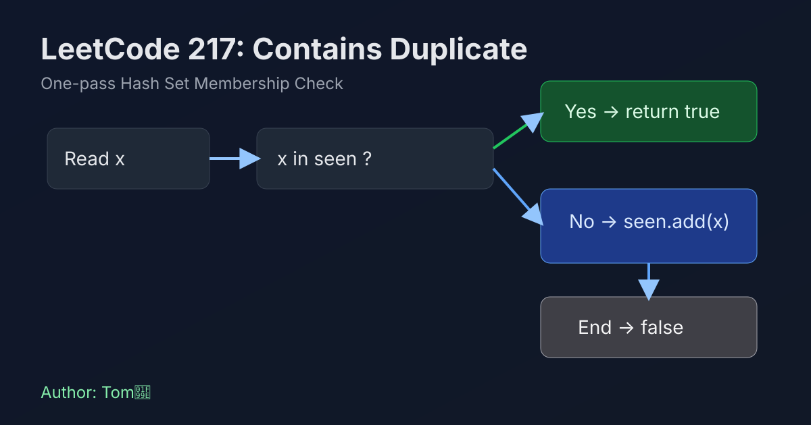

LeetCode 217: Contains Duplicate (Hash Set Membership Check)
LeetCode 217Hash SetArrayToday we solve LeetCode 217 - Contains Duplicate.
Source: https://leetcode.com/problems/contains-duplicate/

English
Problem Summary
Given an integer array nums, return true if any value appears at least twice, otherwise return false.
Key Insight
As we scan from left to right, we only need to know whether a number has appeared before. A hash set gives average O(1) membership checks, so we can detect duplicates in one pass.
Brute Force and Limitations
Nested loops compare every pair: simple but O(n^2). Sorting then checking neighbors is O(n log n) and may mutate input. Hash set is the cleanest O(n) solution.
Optimal Algorithm Steps
1) Create an empty hash set seen.
2) For each number x in nums:
- if x is already in seen, return true.
- otherwise add x to seen.
3) If loop ends, return false.
Complexity Analysis
Time: O(n) average.
Space: O(n).
Common Pitfalls
- Forgetting early return when a duplicate is found.
- Accidentally using list/array for membership and degrading to O(n^2).
- Not considering empty or single-element arrays.
Reference Implementations (Java / Go / C++ / Python / JavaScript)
import java.util.HashSet;
import java.util.Set;
class Solution {
public boolean containsDuplicate(int[] nums) {
Set<Integer> seen = new HashSet<>();
for (int x : nums) {
if (seen.contains(x)) {
return true;
}
seen.add(x);
}
return false;
}
}func containsDuplicate(nums []int) bool {
seen := make(map[int]struct{}, len(nums))
for _, x := range nums {
if _, ok := seen[x]; ok {
return true
}
seen[x] = struct{}{}
}
return false
}class Solution {
public:
bool containsDuplicate(vector<int>& nums) {
unordered_set<int> seen;
seen.reserve(nums.size());
for (int x : nums) {
if (seen.count(x)) {
return true;
}
seen.insert(x);
}
return false;
}
};class Solution:
def containsDuplicate(self, nums: list[int]) -> bool:
seen = set()
for x in nums:
if x in seen:
return True
seen.add(x)
return Falsevar containsDuplicate = function(nums) {
const seen = new Set();
for (const x of nums) {
if (seen.has(x)) {
return true;
}
seen.add(x);
}
return false;
};中文
题目概述
给定整数数组 nums，如果任意元素至少出现两次，返回 true；否则返回 false。
核心思路
从左到右遍历时，只需要判断“当前数字是否见过”。使用哈希集合做成员查询，平均 O(1)，因此可以一趟扫描完成判重。
暴力解法与不足
双重循环比较每一对元素，复杂度 O(n^2)。先排序再比较相邻元素可以降到 O(n log n)，但会改动顺序。哈希集合方案最直接且高效。
最优算法步骤
1）创建空集合 seen。
2）遍历 nums 中每个元素 x：
- 若 x 已在 seen 中，立即返回 true；
- 否则将 x 加入 seen。
3）遍历结束仍未命中重复，返回 false。
复杂度分析
时间复杂度：O(n)（平均）。
空间复杂度：O(n)。
常见陷阱
- 找到重复后没有立即返回。
- 误用数组做包含判断导致退化为 O(n^2)。
- 忽略空数组或单元素数组边界。
多语言参考实现（Java / Go / C++ / Python / JavaScript）
import java.util.HashSet;
import java.util.Set;
class Solution {
public boolean containsDuplicate(int[] nums) {
Set<Integer> seen = new HashSet<>();
for (int x : nums) {
if (seen.contains(x)) {
return true;
}
seen.add(x);
}
return false;
}
}func containsDuplicate(nums []int) bool {
seen := make(map[int]struct{}, len(nums))
for _, x := range nums {
if _, ok := seen[x]; ok {
return true
}
seen[x] = struct{}{}
}
return false
}class Solution {
public:
bool containsDuplicate(vector<int>& nums) {
unordered_set<int> seen;
seen.reserve(nums.size());
for (int x : nums) {
if (seen.count(x)) {
return true;
}
seen.insert(x);
}
return false;
}
};class Solution:
def containsDuplicate(self, nums: list[int]) -> bool:
seen = set()
for x in nums:
if x in seen:
return True
seen.add(x)
return Falsevar containsDuplicate = function(nums) {
const seen = new Set();
for (const x of nums) {
if (seen.has(x)) {
return true;
}
seen.add(x);
}
return false;
};
Comments